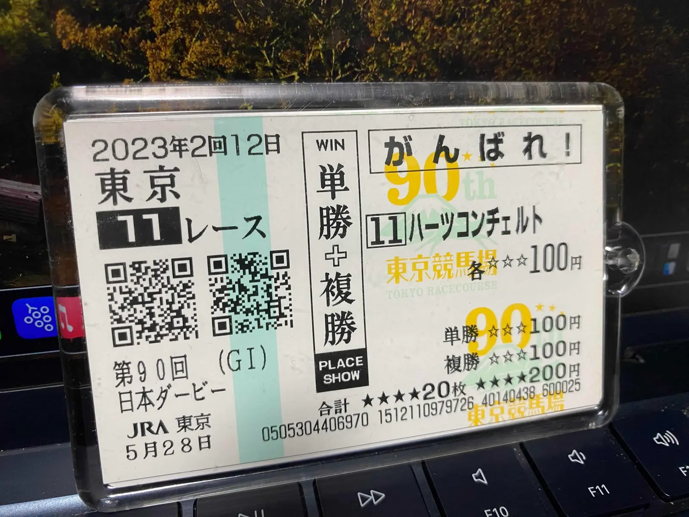

今年もダービーがやってくる．改めて述べるほどのことでもないが，近代西欧に端を発し人類が脈々と受け継いできた文化の粋にしてメルセンヌ・ツイスタよりもエレガントな乱数発生装置たる競馬，その本邦最高のレースであるところの日本ダービーである．
毎年のように言っているが，この時期の浮遊した感覚は何にも代えがたいものがある．月曜にコンビニで競馬ブックとギャロップを買い込むだけで年甲斐もなく浮き足立ってしまうし，渋谷の街頭で配布されていた（いくぶん良識を失ったとしか思えない）JRAの宣伝ビラにさえも不思議と心をくすぐられる（一体ゴジラとダービーにどのような関係があるというのだろうか？）．かくのごとく平板な日常に適度な頻度で風穴を開けてくれる競馬を趣味としていることは，ハズレ馬券により敢え無く失った金銭のぶんを差し引いても幸せなことである．

この時期はかつての活躍馬の仔がデビューするという報をよく聞くわけだが，そのたび月日の流れを実感させられる．我が身を顧みても4月に博士後期課程に入学し数日後にはついにアラサーに突入するというタイミングであるから，いろいろと思うところはあるのだ．同輩の諸君はみな生き馬の目を抜く産業界で着実にキャリアを重ねているので，深夜の院生室で出がらしの番茶を啜りながらSNSで彼ら彼女らの近況をつぶさにチェックしていると，どこか自分だけが取り残されたみたいな独りよがりな疎外感を覚えてしまいがちである．
少なくとも表面的には人々は変わってしまったように映る．かつて難解な理論物理学の教科書の行間を埋めることに腐心していた友人は一流企業に就職し，教科書の代わりに自己啓発本と資格・検定対策本を携えてビジネスマンとしての栄達を目指している．あれだけパッパラパーだったサークルの先輩諸氏でさえも今ではすっかり所帯じみてしまい，NISAだiDeCoだなどとシャバいことを宣っている．彼ら彼女らが目に見える形で自らの人生を前に進めているのに引き換え，自分はウォーキングマシンを走り続けているように少しも前に進んでいる感触が得られていない．この手の悩みは世の大学院生なら誰しも抱えているものかもしれないが，齢二十五を目前にして素面で向き合えるほどの胆力は私は持ち合わせていないのだ．世の人々は大学生活を軽率に「人生の夏休み」みたいに喩えるのでなお苦しくなるが，実際は自分だけ8月31日をループするなかで周りが新学期を迎えるのを眺めている状況に等しいのだということを是非ご理解いただきたいものである．まあ，それも自分で選び取った道に他ならないのだが．
そんな自分だから，なぜ大学で研究を続けているのかと自問することも多い．研究者のなかには自分の成果が人々の福利に貢献すると何の衒いもなく信じている人が多くいるようだが，私は未だそういった境地に達したことはない．本当に自分のやっていることが（投入された税金に見合うだけの）成果を生み出しているのかという疑問は常に胸の内から離れることはないし，仮に社会に貢献しているとしても，それを他でもない自分がやらなければならないという確信はそう簡単には得難いものである．したがって自分のなかに理由を見出すしかないわけだが，好奇心に貫徹された人間とは程遠い俗物であるという自覚を得ている以上，どうにも八方塞がりではないかという気がしてならない．夢のない夢追人，それがいまの私に対する過不足ない形容である．
とはいえ，生きていれば背負うものは勝手に増えていってしまう．東大生は総じて富裕であるという世間のイメージとは乖離して，学部時代の頃から学費やら生活費などを自弁し続けてきて進学など望むべくもないという人は少なくなかった．彼らにしてみれば，私のように大学院で研究を続けるというのはこの上ない幸せと映っていたに違いない．道半ばで生命を絶たれたジョッキーに対して多くの同僚が「彼の思いを胸に騎乗を続けていきたい」と真率な哀悼の言葉を手向けるように，運良くリングに立ち続けられている人間は志を遂げられなかった人たちの思いを胸に全力でそこに立ち続けなければならないのだ．それは好むと好まざるにかかわらず我々が背負わなければならない責務であり，それこそが私がいまここにいる理由なのかもしれないと，最近はよく考えている．
ふと気がつけば発走まであと14時間という頃合いである．いまはこんなに脳髄が熱を持って眠れないほどなのだが，いざレースが終わってダービーの魔法が解けてしまえば独特の浮遊感はあっという間に虚空の彼方に消え去ってしまうことを私は知っている．そして，朧げに見える月に手を伸ばそうと暗い淵でもがきながら，同時にまだ水底に足がつかないのかと焦り続けているような，どっちつかずの情けない日常がまた続いていくのだ．夢から覚めたとき億万長者になっているか文無しになっているかは神のみぞ知るところだが，願わくば申請中の授業料免除が降りなくともメシを食っていけるだけの金を手にしていることを祈りたいものである．
締切までに二転三転四転五転するのは目に見えているが，とりあえず本命は◎シックスペンスとさせていただきたい．一線級と未対戦ながら上位人気に推されているとなると疑いたくなるのが人情だが，どうみてもスロー濃厚なメンバー構成でポジション意識の高い川田Jと来れば，ここはしっかり好勝負に持ち込んでくれるはず．スタミナというよりはむしろトップスピードが求められる展開になると見込んで，ここは頭まで狙ってみたい．
＜2024日本ダービー＞
- ◎シックスペンス
- ◯ジャスティンミラノ
- ▲レガレイラ
- △コスモキュランダ
- △アーバンシック